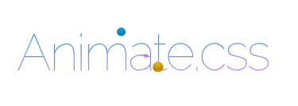

FRAMEWORKS CSS
Este maneja una estructura especifica y herramientas que permiten implementar diseños para la web de manera más ordenada, en su estructura se destacan las hojas de estilo, librerías y archivos de configuración, así permitiendo un mejor desarrollo de páginas web.Podemos encontrar ventajas y desventajas de usar estar herramienta:
VENTAJAS
-Acelera el desarrollo de las páginas web-Es más seguro que sea compatible con todos los navegadores
-Están evolucionados que al tener un error son corregidos instantaneamente
DESVENTAJAS
-Al usar varios estilos y librerias, la página web se demora màs en cargar ya que es bastante pesada-Debemos personalizar lo que se este trabajando, de lo contrario será similar a muchas otras páginas web o diseños de trabajos
-Se debe tener claro el funcionamiento y manejo de CSS -Aprender y tener claro como funciona el Framework Css, de lo contrario este generará inconvenietnes al trabajar tanto solo como en equipo
TIPOS DE FRAMEWORKS MÁS DESTACADOS PARA LA CREACIÓN DE INTERFACES
BOOTSTRAP:-Cuenta con un sistema grid responsive, adecuado a cualquier tipo de pantalla
-Sistema de clases y elementos predefinidos

BULMA: Se basa en la potencia de flexbox, para poder gestionar los comportamientos responsive
-Cuenta con un sistema responsive
-Diseño modular
-Maneja Flexbox en CSS

FOUNDATION: Ofrece una gama de componentes prediseñados mayor que los demás
-El código es ligeramente libiano y no afecta a ninguna de sus funcionalidades
-Tiene una versión dedicada únicamente a la creación de emails personalizados
-Es de fácil acceso a la web

ANIMATE.CSS: Su funcionalidad gira en torno a la introducción de animaciones CSS predefinidas en elementos de HTML
-Cuenta con gran variedad de animaciones diferentes
-Se puede personalizar
-Es compatible con los navegadores

POSICIONAMIENTO WEB
Es un conjunto de técnicas aplicadas en las páginas web para lograr mejorar su posición y visibildiad, quedando así como principal resultado en las primeras busquedas de los navegadores.Es importante el posicionamiento web ya que tiene más visibilidad tu web, es buena inversión a largo plazo, rentabiliza tu web, construye confianza y credibilidad.
POSICIONAMIENTO WEB SEO ON-PAGE:
Son técnicas usadas para mejorar el posicionamiento de la página web, tales como:
-Mejorar la velocidad y optimización de la web
-Buena estructura de etiquetas HTML
-Optimización de imagenes
-Experincia del usuario
POSICIONAMIENTO WEB SEO OFF-PAGE:
Técnicas llevadas a cabo fuera de la página web, tales como:
-Marketing
-Uso de redes sociales
-Registro de directorios
ITEMS PARA TENER UN BUEN POSICIONAMIENTO WEB
-Optimar la página web
-Escribir contenido importante o relevante para los lectores en el buscador
-Crear contenido de calidad
-Recursos gráficos en la página
-Poner información unicamente de interés
-Fidelizar y conseguir tráfico recurrente
VENTAJAS
-No conlleva ningún costo económico-Aumenta el tráfico
DESVENTAJAS
-No se garantizan los resultados-No tienen resultados inmediatos

REFERENCIAS BIBLIOGRÁFICAS
-(11 agosto, 2014). Principales ventajas y desventajas de emplear una framework CSS. Aula formativa. Recuperado de: https://blog.aulaformativa.com/principales-ventajas-y-desventajas-de-emplear-una-framework-css/
-Pérez Jiménez, J. (23 febrero, 2019). Ventajas y desventajas de usar Framework CSS. OpenWebinars. Recuperado de: https://openwebinars.net/blog/ventajas-y-desventajas-de-usar-framework-css/
-(29 julio,2018). ¿Qué es un Framework Css?. Codigofacilito. Recuperado de: https://www.youtube.com/watch?v=I_-H72yY0ZQ
-CSS avanzando, Capitulo 5. Frameworks. Uniwebsidad. Recuperado de: https://uniwebsidad.com/libros/css-avanzado/capitulo-5
-Carrasco,P. (26 julio,2020). ¿Qué frameworks CSS serán tendencia en 2020?. OpenWebinars. Recuperado de: https://openwebinars.net/blog/que-frameworks-css-seran-tendencia-en-2020/
-Capella,M. (4 de junio,2020). Posicionamiento web: estar en posición 1 en 9 pasos. Inboundcycle. Recuperado de: https://www.inboundcycle.com/blog-de-inbound-marketing/como-posicionar-mi-web-5-pasos-para-ser-top-1-en-google
-Acibeiro,M. (22-08-2018). ¿Qué es el posicionamiento SEO y por qué es tan importante?. GoDaddy. Recuperado de: https://es.godaddy.com/blog/que-es-posicionamiento-seo/
-Cardona, L. (17 de septiembre 2020). ¿Qué es el SEO? Guía de posicionamiento web. Cybercllick. Recuperado de: https://www.cyberclick.es/que-es/seo
-Ventajas y desventajas del SEO. Comusys. Recuperado de: https://www.comusys.com/blog/ventajas-y-desventajas-del-seo/